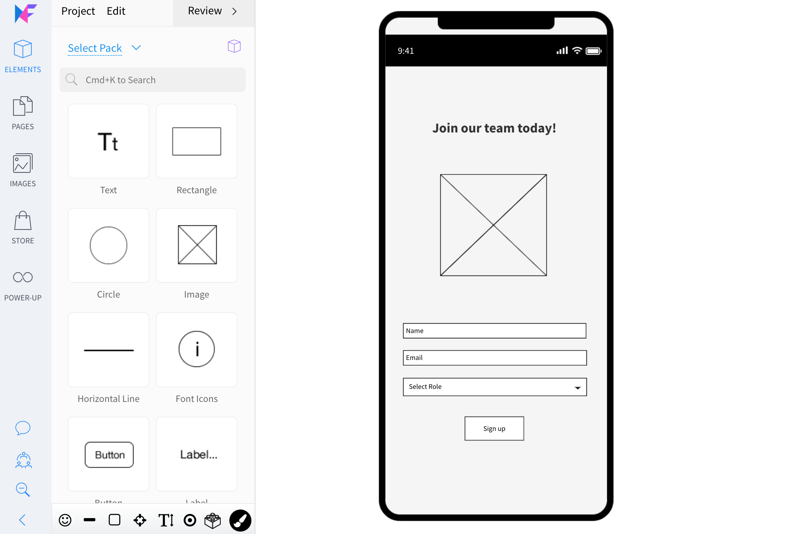
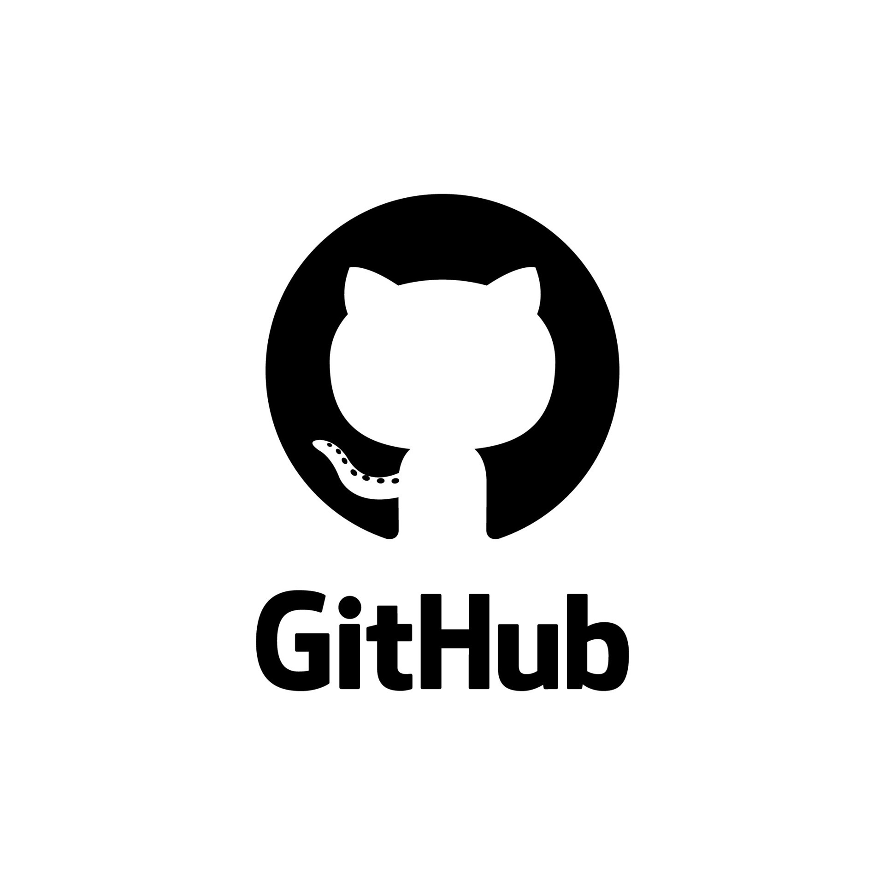

purpose of ReadMe file
A README file explains the purpose of a project and provides essential information for anyone who opens the repository. It helps users understand what the project does, how to set it up, and how to use it. It also guides contributors by outlining the workflow, requirements, and important details. In short, the README acts as the project’s main documentation and first point of reference.
If you want an even shorter or more formal version, I can shape it however you like.
Read more

Purpose of a Wireframe
A wireframe is created to show the basic structure and layout of a webpage before any colours, images, or detailed design are added. It helps you plan where elements like headings, text, buttons, and forms will go, making it easier to organise content and check that the page makes sense. Designers and developers use wireframes to agree on the layout early, so they can avoid mistakes and save time later in the project.
Read more

Branch in
A branch in Git is a separate workspace that lets you develop new features or make changes without affecting the main project. It keeps your work isolated so you can experiment safely, fix issues, or build improvements without breaking anything. Once the work on a branch is complete, it can be merged back into the main codebase, keeping the project organised and easy to manage.
Read more